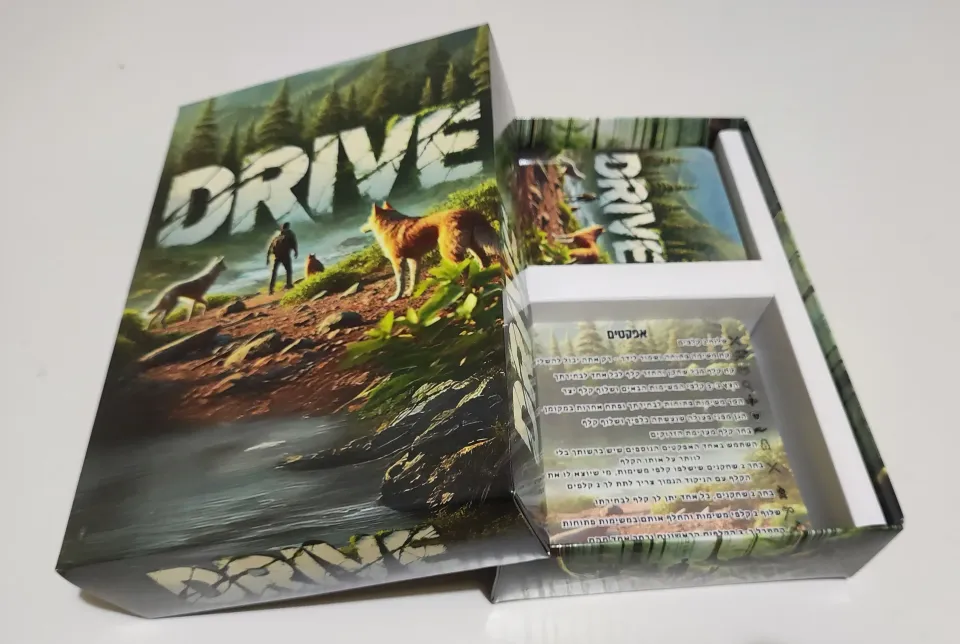
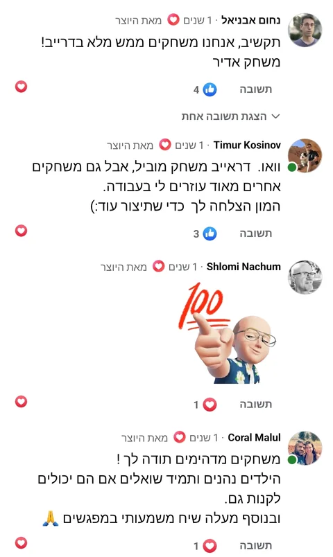

הוספנו למשחק שכל פעם שלוקחים יצר צריך להגיד איך היצר הזה מתבטא בחיים שלנו וזה הוביל גם לשיח ממש מענייןהודעת WhatsApp
דרייב
אוספים קלפי יצרים, מפעילים יכולות ומשלימים משימות. משחק אסטרטגיה מעולם הכלבים, שבו כל תור מביא איתו בחירה חדשה.
165 ₪
משלוח עד הבית ב־35 ₪ בלבד · איסוף עצמי ללא עלות מבאר שבע
לפרטים ולהזמנה בוואטסאפ
לתכנן קדימה, לבחור מה לעשות עכשיו ולהשאיר מקום להפתעות. ״דרייב״ הוא משחק קלפים המבוסס על היצרים של כלבים ובני אדם, שבו אוספים קלפים, משתמשים ביכולות שלהם ומשלימים משימות כדי לצבור נקודות.
בכל תור אפשר לבצע עד שתי פעולות: לשלוף קלף יצר, להפעיל יכולת מיוחדת או להשלים משימה בעזרת הסמלים המתאימים. הבחירה בידיים שלכם.
בתוך המארז: 110 קלפים
- 48 קלפי יצרים עם סמלים ויכולות שונות.
- 12 קלפי יצרים כפולים.
- 4 קלפי ג׳וקר.
- 45 קלפי משימות.
- קלף עזר אחד וחוברת הוראות.
משחקים בדרך שמתאימה לכם
ל־2 עד 7 שחקנים, מגיל 6 ומעלה. אפשר לפשט את המשחק לילדים צעירים יותר באמצעות ויתור על יכולות הקלפים, או בחירה רק בחלק מהן. לרוכשים יישלחו מערכים מותאמים לעבודה טיפולית.
לצפייה בסרטוני ההסבר לחצו כאן
מהמשחק אל המפגש
מה מספרים על דרייב
הודעות ותגובות על דרייב, במילים של מי שכתבו אותן.


לקריאת ההמלצה המלאהוואו. דראייב משחק מוביל, אבל גם משחקים אחרים מאוד עוזרים לי בעבודה.תגובה בפייסבוק